Discover the enchanting world of roses through their stunning array of
colors. Whether you're an avid gardener, a florist, or simply a lover of
beautiful blooms, our Color Gallery offers a comprehensive view of roses
sorted by their vibrant hues. Find the perfect rose to brighten your
garden or convey your message with the ideal shade. Explore our categories
below to uncover the magic of roses in every color.
- Red Roses
Classic Romance and Passion
Red roses symbolize love, romance, and desire. Our collection of red
roses showcases deep crimson hues and vibrant scarlet tones, perfect for
expressing heartfelt emotions or adding a bold splash of color to any
arrangement.

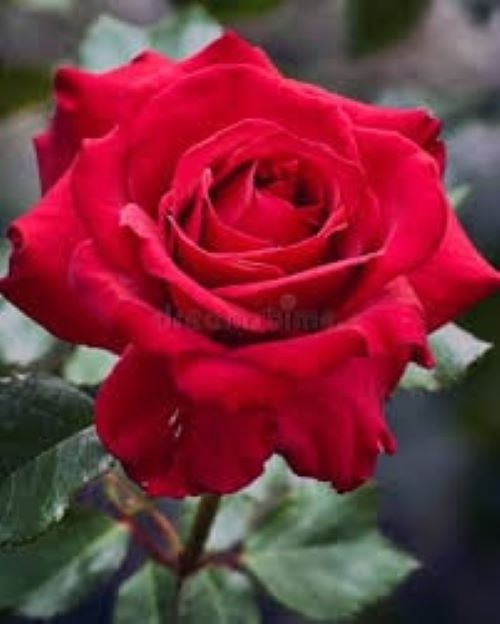
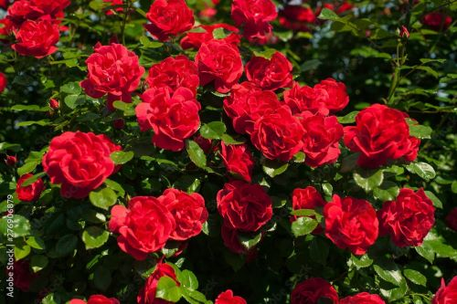
-
Scarlet Splendor: The quintessential red rose, ideal for timeless
romantic gestures.
-
Crimson Beauty: Deep and dramatic, perfect for adding intensity to
your floral display.
-
Bright Red Radiance: A lively and passionate choice for any
celebration.
- White Roses
Elegance and Purity
White roses are a symbol of purity, innocence, and elegance. They are
perfect for weddings, anniversaries, or any occasion where grace and
beauty are desired.
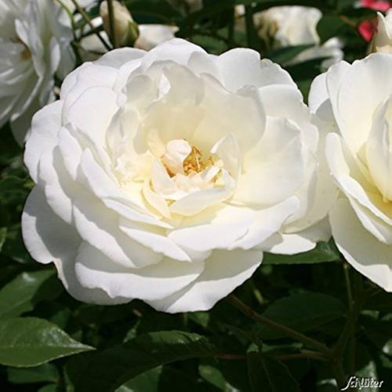
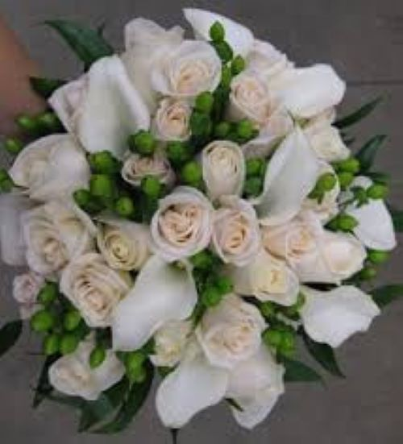
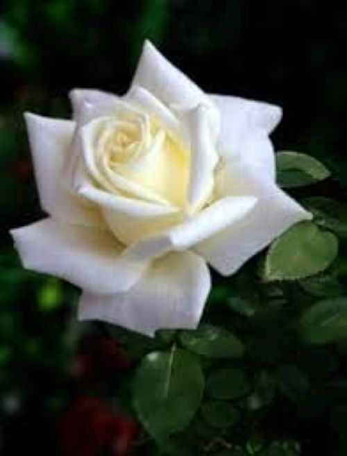
-
Pure Snowfall: Immaculate white blooms that exude serenity and
sophistication.
-
Ivory Elegance: Soft and creamy, ideal for creating a subtle and
elegant bouquet.
-
Pearl Whisper: Delicate and refined, perfect for expressing subtle
beauty.
- Pink Roses
Grace, Joy, and Gratitude
Pink roses convey a range of emotions from admiration and joy to
gratitude and sweetness. Our selection of pink roses includes shades
from soft pastels to vibrant fuchsias, making them versatile for any
occasion.

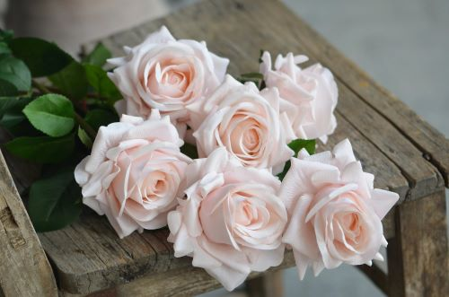
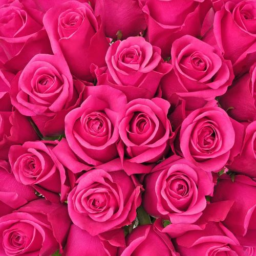
-
Soft Blush: Gentle and sweet, perfect for expressing admiration or
appreciation.
-
Hot Pink Extravaganza: Bold and vibrant, great for celebrating lively
moments.
-
Peachy Perfection: A warm and inviting shade that conveys sincerity
and warmth.
- Yellow Roses
Friendship and Cheerfulness
Yellow roses are synonymous with friendship, joy, and new beginnings.
Their bright and sunny hues make them an excellent choice for bringing a
smile to someone's face or celebrating a cheerful occasion.
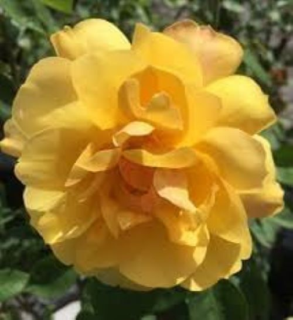
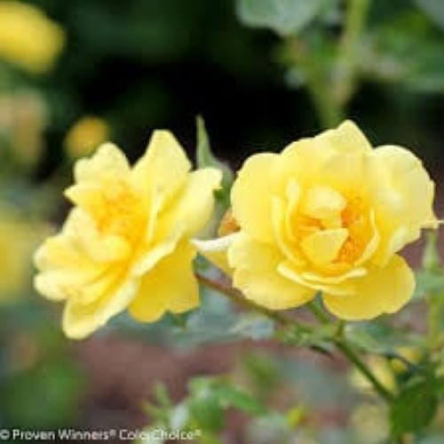
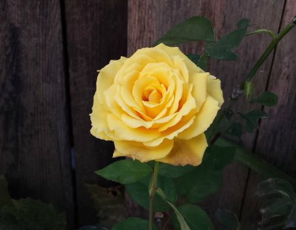
-
Sunny Delight: Radiant and uplifting, perfect for spreading happiness.
-
Golden Glow: Rich and warm, ideal for expressing gratitude and joy.
-
Lemon Zest: Fresh and lively, great for brightening up any floral
arrangement.
- Orange Roses
Enthusiasm and Energy
Orange roses are vibrant and full of energy, symbolizing enthusiasm,
fascination, and admiration. They are perfect for making a bold
statement or celebrating dynamic and exciting moments.
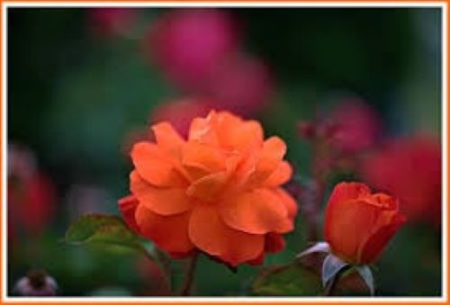
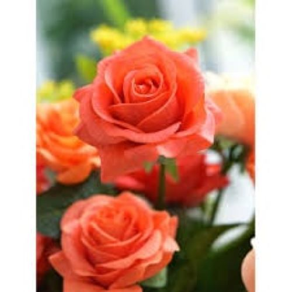
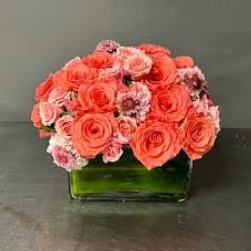
-
Tangerine Dream: Bright and lively, perfect for adding a burst of
color.
-
Sunset Orange: Warm and rich, ideal for conveying admiration and
enthusiasm.
-
Coral Charm: A lovely blend of orange and pink, adding a touch of
warmth and cheer.
- Lavender Roses
Mystery and Enchantment
Lavender roses are a symbol of enchantment, mystery, and elegance. Their
unique color makes them a wonderful choice for adding a touch of magic
to any occasion or expressing admiration in a distinctive way.
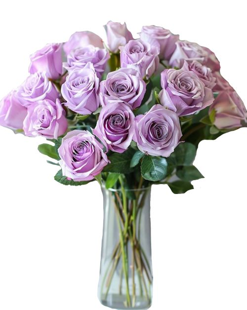
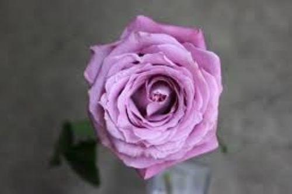
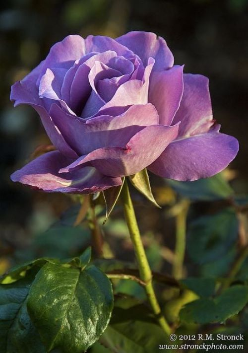
-
Soft Lavender Mist: Gentle and calming, ideal for creating a serene
atmosphere.
-
Mystic Purple: Rich and regal, perfect for conveying admiration and
luxury.
-
Amethyst Aura: A captivating shade that adds a touch of mystery and
allure.
- Multicolored Roses
Diverse Beauty and Creativity
Multicolored roses bring together a vibrant mix of shades, creating a
stunning and unique visual effect. They are perfect for celebrating
diversity, creativity, and the beauty of individuality.
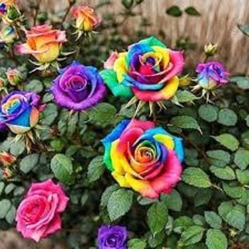
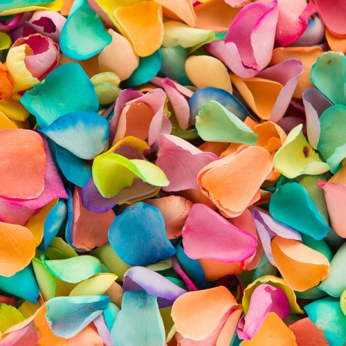
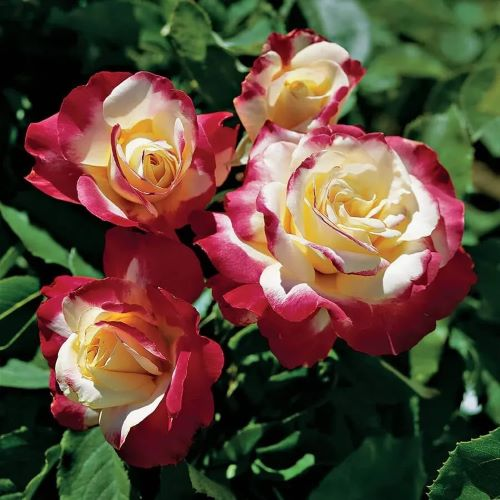
-
Rainbow Radiance: A dazzling mix of colors that celebrate joy and
diversity.
-
Confetti Burst: A playful and energetic combination of hues, perfect
for festive occasions.
-
Mixed Delight: An eclectic blend of shades that adds a creative touch
to any bouquet.
- More Roses
Explore Beyond the Basics
Our collection doesn't stop at the primary colors. Explore a variety of
unique and rare hues that can add a special touch to your floral
arrangements.
-
Unique Varieties: Discover roses in uncommon shades and patterns for a
truly distinctive look.
-
Seasonal Specials: Enjoy limited-time colors that change with the
seasons, offering fresh and exciting options year-round.
 Home
Home